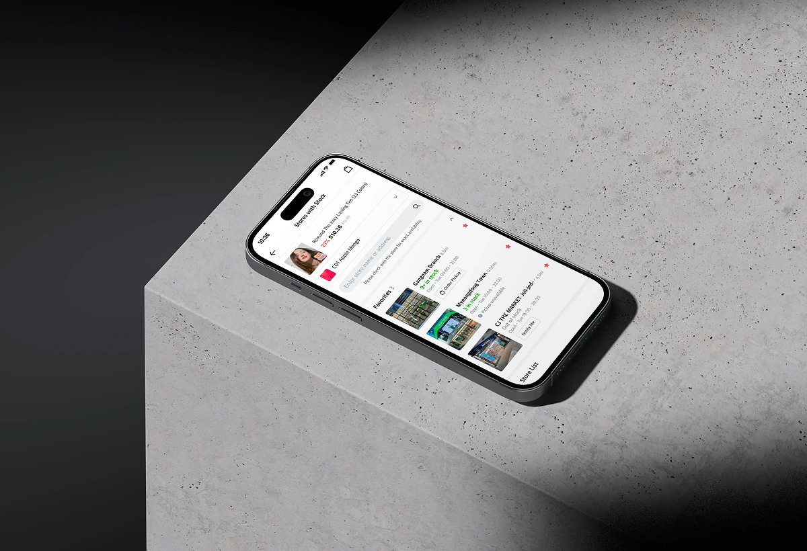
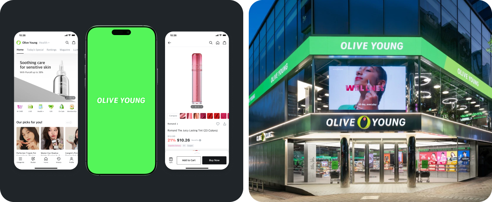

Capture high-intent demand
Help customers confirm nearby product availability before purchase intent drops.

Olive Young had strong digital and physical store businesses, but the connection between the two did not fully support how customers shop across channels.
When customers found a product online, they could not easily confirm whether it was available at a nearby store or eligible for pickup. The existing store finder was closer to a static store information page than a shopping tool, making store discovery, inventory checks, and pickup decisions feel fragmented.

This created avoidable business friction that a better digital experience could have reduced:
1. High-intent customers could drop off before purchase.
2. Store staff absorbed repetitive inventory-check calls during daily operations.
This fragmented experience created friction for two key user groups:
 Customers
Customers
We saw the store finder as more than a utility feature.
By redesigning it around store availability, product discovery, and pickup, it could become a business-driving touchpoint.
Help customers confirm nearby product availability before purchase intent drops.
Convert confirmed availability into a clear pickup order path.
Reduce repetitive availability calls by making inventory easier to check digitally.
Create a map-based store finder that completes the shopping journey by connecting product interest to nearby store availability and pickup.
Users discover a product online and need it today.
Users think of a nearby store and want to see what's available.
To meet both the business and UX goals, we redesigned the store finder around three key improvements: location-based discovery, clearer inventory information, and a faster path to pickup.
Olive Young had strong digital and physical store businesses, but the connection between the digital and physical store did not fully support how customers shop across channels.
When customers found a product online, they could not easily confirm whether it was available at a nearby store or eligible for pickup. The existing store finder was closer to a static store information page than a shopping tool, making store discovery, inventory checks, and pickup decisions feel fragmented.
Olive Young had strong digital and physical store businesses, but the connection between the digital and physical store did not fully support how customers shop across channels.
When customers found a product online, they could not easily confirm whether it was available at a nearby store or eligible for pickup. The existing store finder was closer to a static store information page than a shopping tool, making store discovery, inventory checks, and pickup decisions feel fragmented.